Klik kategori di bawah untuk menyaring sajian favorit Anda
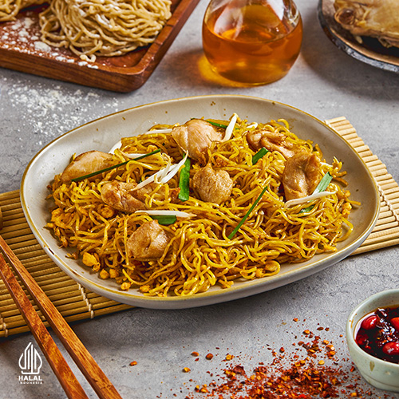
Mie kenyal digoreng harum khas wok oriental dengan potongan daging ayam gurih dan sayuran renyah.
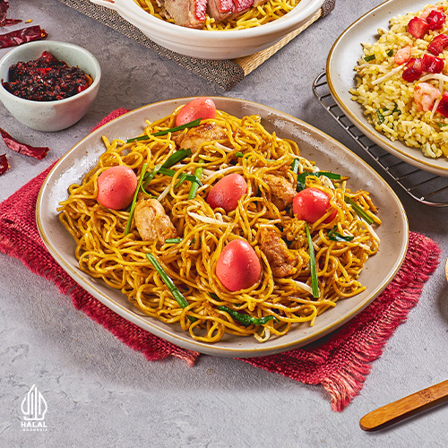
Sajian simbolis panjang umur bertabur telur puyuh merah dan suwiran ayam istimewa penuh kehangatan.
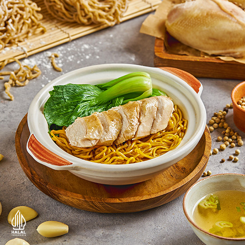
Tekstur mie tipis lentur khas Hong Kong disajikan dengan ayam rebus berbumbu minyak wijen harum.
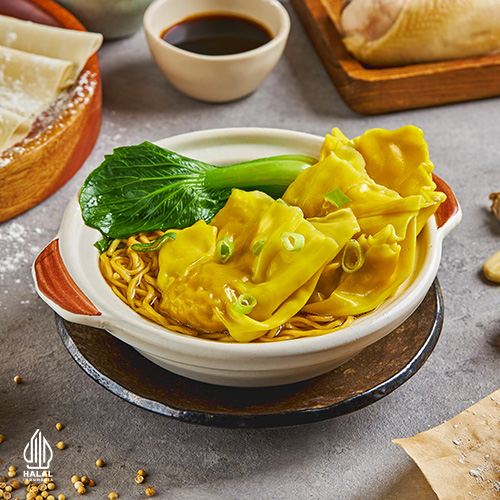
Kombinasi klasik mie Hong Kong gurih disajikan bersama pangsit ayam lembut bercitarasa autentik.
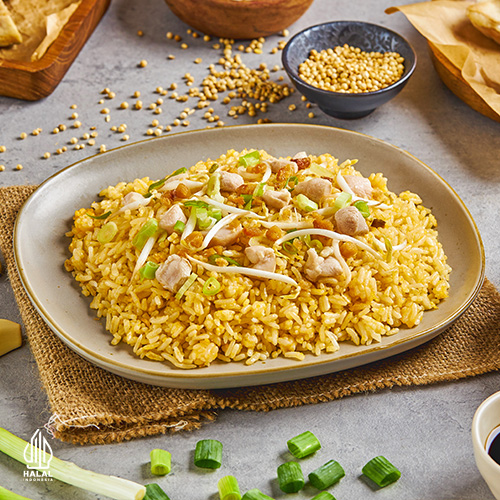
Aroma gurih khas ikan asin jambal roti berpadu sempurna dengan butiran nasi goreng beraroma sedap.
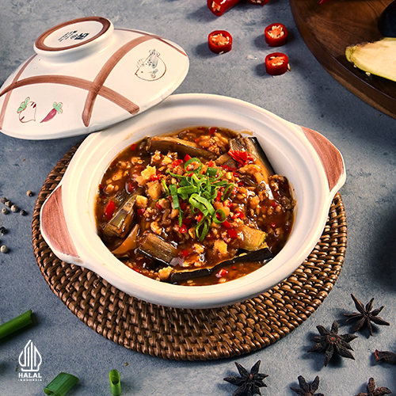
Terong ungu lembut berkuah kental gurih manis dengan limpahan daging ayam cincang hangat mengepul.
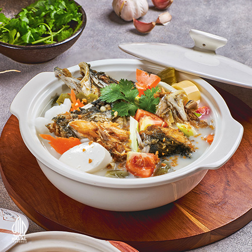
Kuah sup kaya rempah tradisional tradisi Hakka yang segar, gurih, dan menghangatkan jiwa.
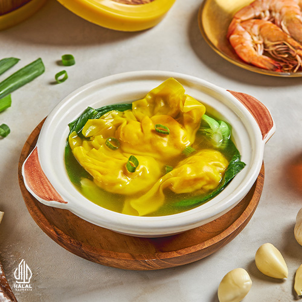
Kuah kaldu bening yang menenangkan dengan isian pangsit udang padat kenyal yang manis alami.
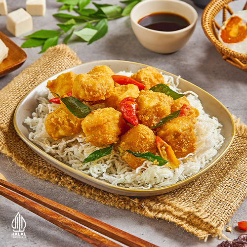
Tahu sutra ekstra lembut berbalut adonan renyah bumbu kuning telur asin yang creamy gurih legit.
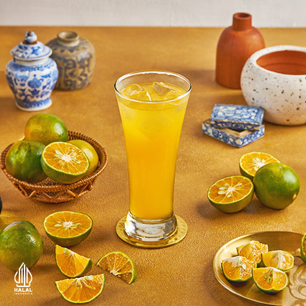
Perasan buah jeruk segar kaya vitamin C yang manis alami dan menyegarkan dahaga.
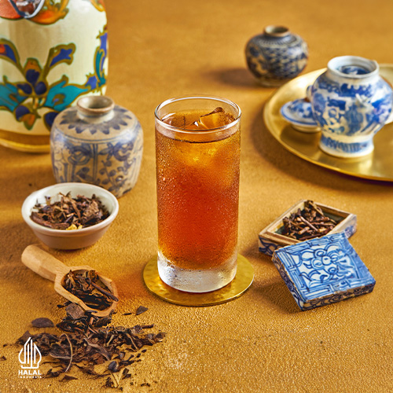
Seduhan teh melati wangi dengan sentuhan kesegaran helai daun mint yang menyejukkan.
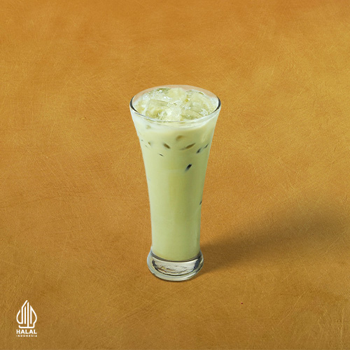
Teh hijau kualitas pilihan dengan aroma harum yang menenangkan dan kaya antioksidan.
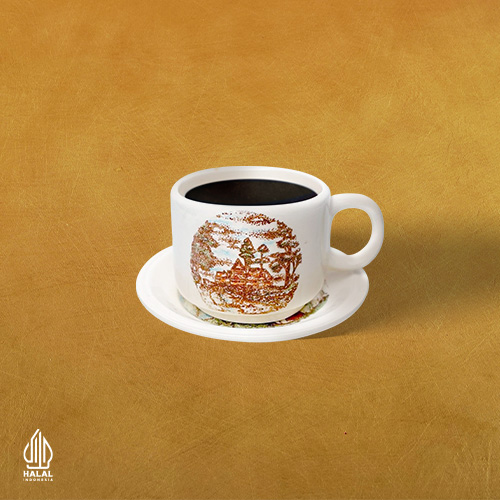
Kopi hitam panas dengan racikan biji kopi beraroma kuat dan cita rasa mantap khas kopitiam.
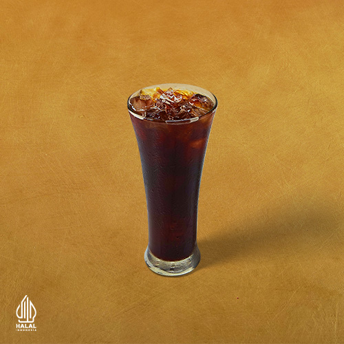
Kopi hitam segar dengan es batu melimpah untuk penyemangat aktivitas harian Anda.
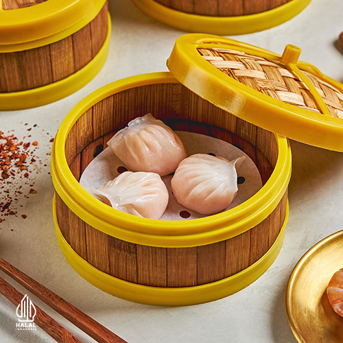
Kulit transparan lembut membungkus udang utuh segar nan renyah dengan aroma minyak wijen khas.
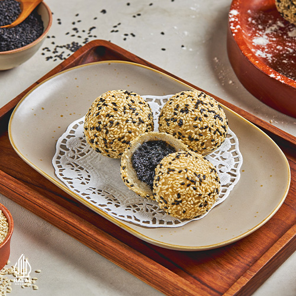
Kulit ketan kenyal berlapis biji wijen renyah dengan isian pasta wijen hitam manis nan lembut.
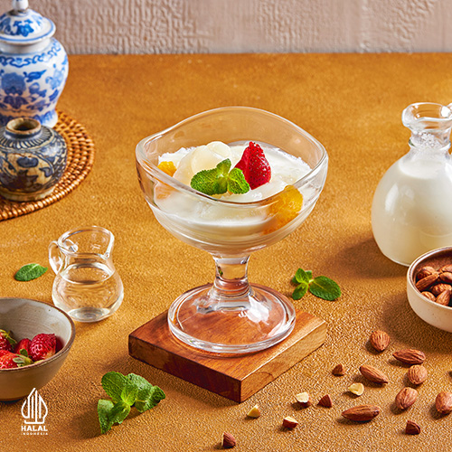
Puding sutra lembut dengan aroma harum kacang almond khas oriental berpadu kuah manis segar.
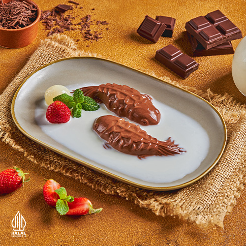
Kelezatan puding cokelat kaya rasa dengan sentuhan vla vanila creamy yang disukai segala usia.
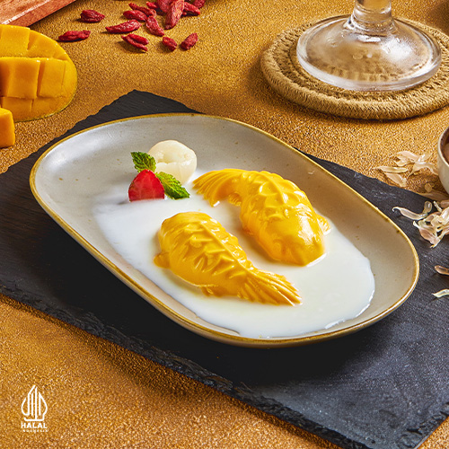
Puding sari buah mangga matang yang manis dan wangi, menghadirkan kesegaran tropis nan manis.
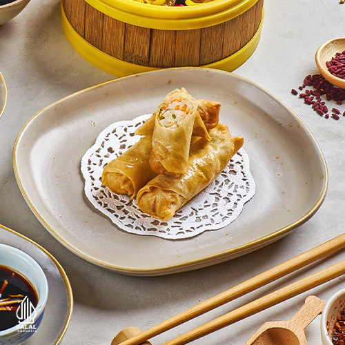
Kulit lumpia garing berpadu dengan cacahan daging ayam berbumbu dan saus cocolan asam manis.
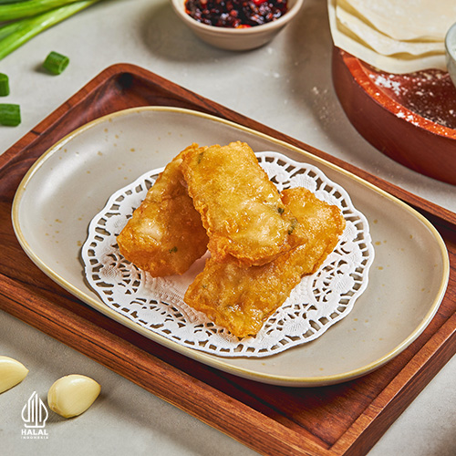
Dibalut lembaran kulit kembang tahu tipis dengan isian ayam udang yang renyah di luar juicy di dalam.
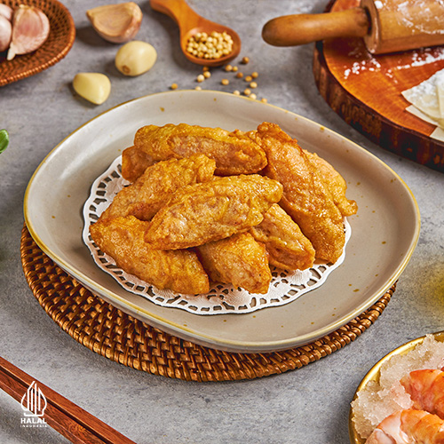
Kelembutan potongan udang segar berbalut kulit renyah emas yang cocok untuk camilan pembuka.
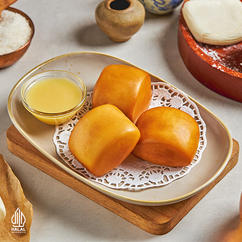
Roti mantau lembut digoreng hingga kuning keemasan, nikmat dicelupkan ke susu kental manis gurih.
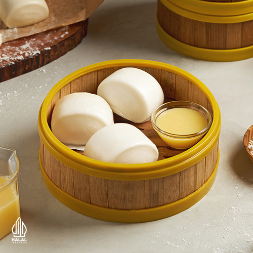
Roti kukus putih nan empuk seperti kapas, pas dinikmati bersama kuah sup sapo atau susu manis.